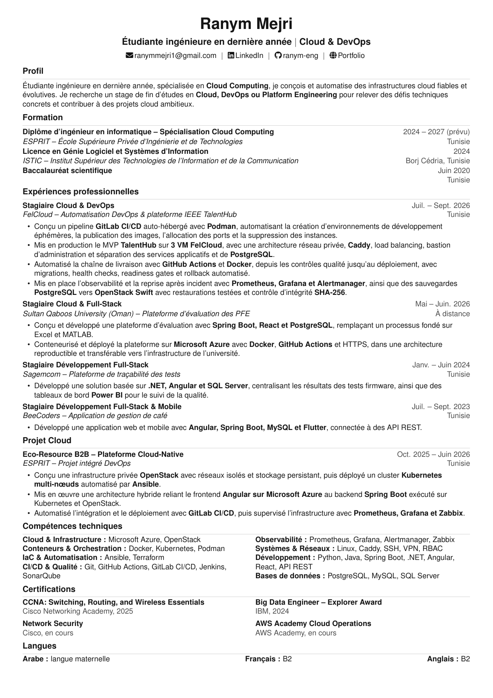
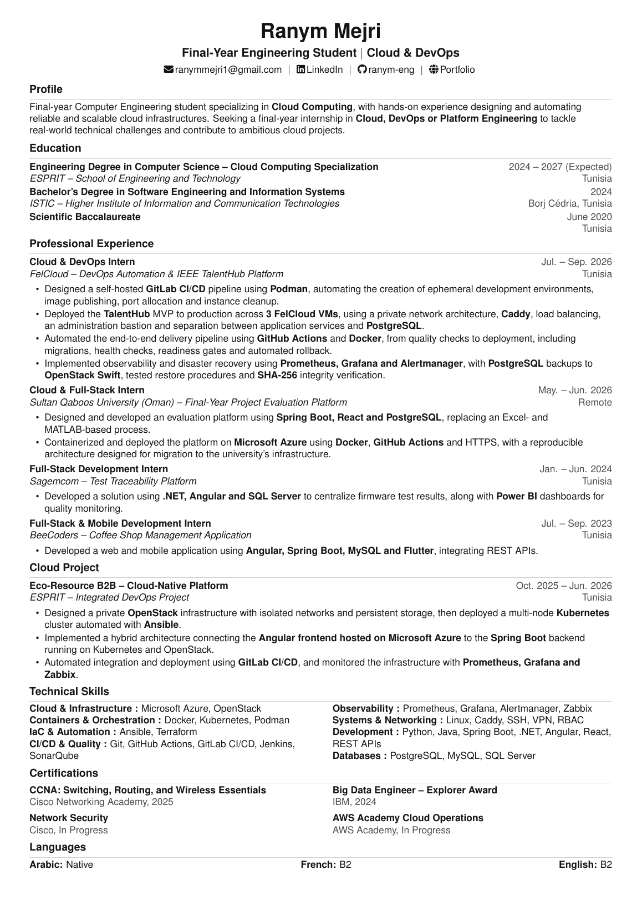

Resume


Profile
Ranym Mejri
Final-year Cloud Computing Engineering student at ESPRIT, specializing in Cloud and DevOps, with hands-on experience in OpenStack, Microsoft Azure, Kubernetes, Docker, CI/CD and observability. Experienced in deploying production-oriented platforms and automating cloud application delivery. Seeking a final-year internship in Cloud, DevOps or Platform Engineering within an international environment.
- Tunisia
- +216 21 392 008
- ranymmejri1@gmail.com
- github.com/ranym-eng
- Portfolio
Education
Engineering Degree in Computer Science
2024 - Present
Cloud Computing Specialization - ESPRIT, Tunisia
Bachelor's Degree in Software Engineering and Information Systems
2024
ISTIC - Institut Supérieur des Technologies de l'Information et de la Communication, Borj Cedria, Tunisia
Scientific Baccalaureate
June 2020
Tunisia
Certifications
CCNA: Switching, Routing and Wireless Essentials
2025
Cisco
Big Data Engineer - Explorer Award
2024
IBM
Frontend & Backend - Angular and Spring Boot
2023
BeeCoders
Languages
Arabic: Native
French: B2
English: B2
Professional Experience
Cloud & DevOps Intern
Aug - Sep 2026
FelCloud - TalentHub Platform, Tunisia
- Productionized a team-developed MVP on FelCloud with public access, application services and data separated across a secure private network architecture.
- Built an end-to-end GitHub Actions CI/CD pipeline with quality checks, immutable Docker images, GHCR publishing, database migrations, health validation and automated rollback.
- Implemented observability and resilience with Prometheus, Grafana, health checks, alerting and restorable PostgreSQL backups.
Cloud & Full-Stack Intern
Jun - Jul 2026
Sultan Qaboos University - Final-Year Project Grading Platform, Remote
- Designed the grading platform with Spring Boot, React and PostgreSQL, replacing a workflow based on Excel and MATLAB.
- Deployed a traceable platform on Microsoft Azure using Docker, GitHub Actions and HTTPS, with an architecture prepared for migration to the university infrastructure.
Full-Stack Development Intern
Aug - Sep 2025
Sagemcom - Employee Management Platform, Tunisia
- Developed an HR application using Angular, Spring Boot and MySQL with JWT authentication, role-based access control and a Python/OpenCV facial-recognition prototype.
Full-Stack Development Intern
Jan - Jun 2024
Sagemcom - Test Traceability Platform, Tunisia
- Developed a .NET, Angular and SQL Server solution centralizing firmware test results and delivered interactive Power BI dashboards for quality monitoring.
Full-Stack & Mobile Development Intern
Jul - Sep 2023
BeeCoders - Café Management Application, Tunisia
- Developed a web and mobile application using Angular, Spring Boot, MySQL and Flutter, with REST API integration.
Selected Cloud Project
Eco-Resource B2B - Cloud-Native Platform
Oct 2025 - Jun 2026
ESPRIT - Industrial Circular Economy Platform, Tunisia
- Deployed a private-cloud infrastructure using OpenStack, including virtual machines, isolated networks, NFS storage and high availability.
- Deployed a multi-node Kubernetes cluster on OpenStack for the Spring Boot backend, with an Angular frontend hosted on Microsoft Azure.
- Automated build, testing and deployment workflows using GitLab CI/CD.
- Implemented observability using Prometheus, Grafana and Zabbix.
Technical Skills
- Cloud & Virtualization: OpenStack, Microsoft Azure, KVM, NFS, High Availability
- Containers & Orchestration: Docker, Kubernetes
- CI/CD & Automation: GitHub Actions, GitLab CI/CD, Jenkins, Ansible, SonarQube
- Monitoring & Observability: Prometheus, Grafana, Zabbix
- Security & Networking: Vault, Cisco, pfSense, VPN, VLANs, routing, switching, load balancing
- Development & APIs: Java, Spring Boot, Python, Flask, Angular, React, .NET, REST APIs
- Databases: PostgreSQL, MySQL, SQL Server
- Systems: Linux, Ubuntu, Kali Linux